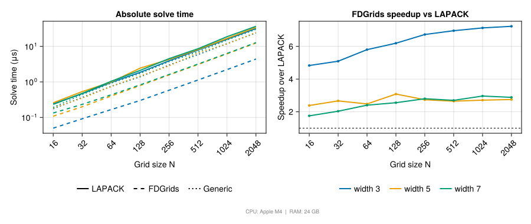
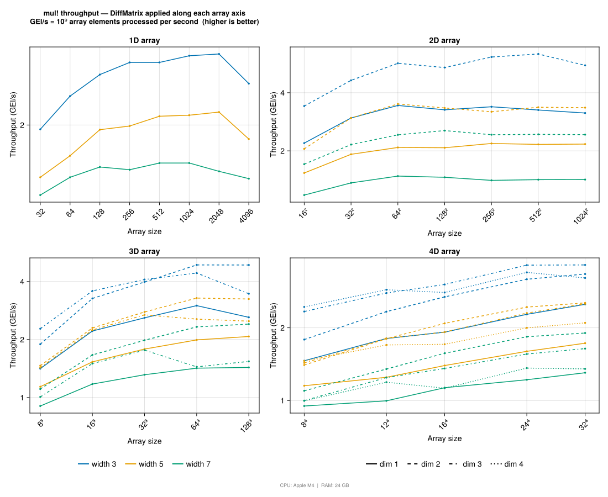
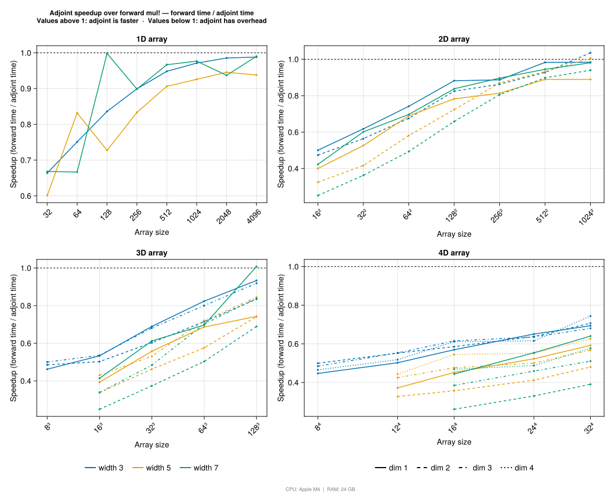
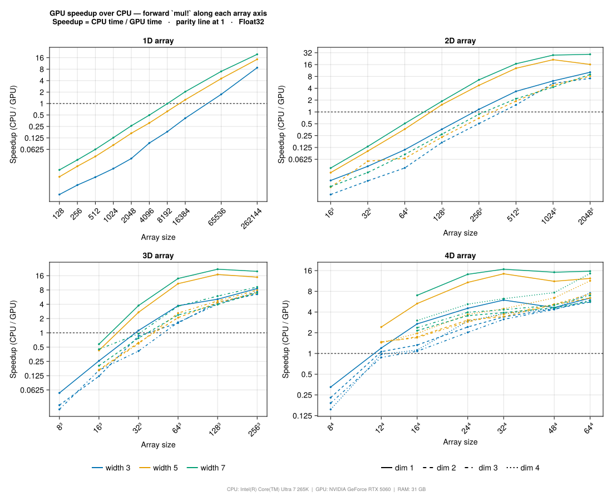
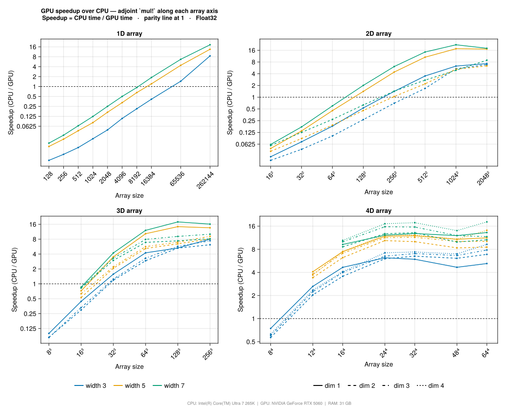

Benchmarks
The scripts in benchmarks/ measure the two performance-critical operations in FDGrids.jl: compact linear solves and dimension-wise multiplication. Each script writes an SVG under docs/src/assets/benchmarks/.
# One-time setup from the package root
julia --project=benchmarks -e '
using Pkg
Pkg.develop(path=".")
Pkg.instantiate()'
julia --project=benchmarks benchmarks/linsolve.jl
julia --project=benchmarks benchmarks/matmul.jl
julia --project=benchmarks benchmarks/adjoint.jl
julia --project=benchmarks benchmarks/gpu.jl # requires a CUDA deviceThe figures embed the CPU model and available RAM of the machine used to run the benchmark. Treat absolute timings as machine-specific; use trends and relative comparisons to understand implementation tradeoffs.
Linear Solve
This benchmark compares the three solve paths documented in Linear Solves:
| Path | Implementation |
|---|---|
| LAPACK | lu(D) to DiffMatrixLULapack, then ldiv! via gbtrf!/gbtrs! with pivoting. |
| FDGrids | lu!(copy(D)), then generated compact ldiv!, no pivoting. |
| Generic | Same no-pivot banded algorithm using ordinary scalar indexing. |
The sweep uses grid sizes N = 16:2048 and stencil widths 3, 5, and 7. Each timing is the median of 300 samples.
The left panel shows absolute solve time. The right panel shows speedup of the compact FDGrids path over LAPACK. The comparison is not only an algorithmic comparison: LAPACK pivots and uses its own banded workspace, while the compact path avoids conversion and keeps factors inside DiffMatrix storage.

Matrix-Vector Product
This benchmark measures mul!(y, D, x, Val(dim)) across:
- array ranks
1,2,3, and4, - square arrays with the same size along every axis,
- differentiation directions
dim = 1:rank, - stencil widths
3,5, and7.
To reduce thermal and cache-order bias, all (rank, width, dim, size) combinations are shuffled and the full sweep is repeated 10 times. The plotted value is the median over those passes.
Throughput is reported in GEl/s: total array elements divided by median wall time. Higher is better. Color encodes stencil width; line style encodes the differentiation direction.

Forward vs Adjoint
This benchmark compares mul!(y, adjoint(D), x, Val(dim)) with the forward operator. The plotted value is
\[\frac{\text{forward time}}{\text{adjoint time}}.\]
A value above 1 means the adjoint is faster; a value below 1 means the adjoint is slower. The dashed line marks parity.
The adjoint should be close to the forward path because the centered body loop uses the same fixed-width generated stencil. A small overhead is expected near boundaries: adjoint head and tail rows have variable-length compact storage, extra pointer arithmetic, and a short runtime loop. The effect is most visible when many short fibers are differentiated, because each fiber pays the boundary cost.

GPU vs CPU
This benchmark times the same mul! call on the host and on a CUDA device, then plots the GPU speedup ratio
\[\frac{\text{CPU time}}{\text{GPU time}}.\]
A value above 1 means the GPU is faster; a value below 1 means the CPU is faster. The dashed line marks parity.
Both sides run in Float32 to match the convention of cu; the CPU operator is built with DiffMatrix(xs, width, order, Float32) so the numerical work is identical. GPU timings wrap the call in CUDA.@sync so kernel completion is measured rather than the host-side launch overhead, and each configuration is warmed up once to keep CUDA kernel compilation out of the samples. Configurations run in randomised order over five independent passes, identical to the methodology used by the other benchmarks on this page.
The sweep covers array ranks 1–4, square arrays with the same size along every axis, all differentiation directions dim = 1:rank, and stencil widths 3, 5, and 7. Color encodes stencil width; line style encodes the differentiation direction.
The crossover where the GPU becomes profitable depends on rank: 1D arrays need a large size to amortise launch overhead because each fiber is short, while 3D and 4D arrays benefit earlier because every fiber contributes independent work that can be mapped to threads in parallel. Stencil width has a secondary effect — wider stencils do more arithmetic per element on both devices, and the GPU's relative advantage from parallelism grows accordingly.
Forward mul!

Adjoint mul!
The adjoint kernel uses the same one-thread-per-output design as the forward kernel; only the boundary rows differ (variable length, bounded by WIDTH + HWIDTH). The speedup curve therefore tracks the forward curve closely, with a small extra cost for the boundary slabs along the differentiated axis.

The figures are produced by benchmarks/gpu.jl and embed the CPU and GPU model used for the run. See GPU Support for the public workflow and Internal Layout and Kernels for how the kernels map onto threads.